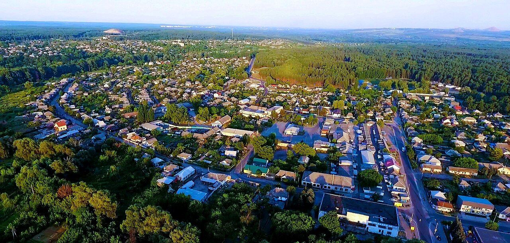

КРЕМІННА
Місто Кремінна на річці Червона розташоване поблизу Сєвєродонецька поруч із Сіверським Донцем.
Слобода Кремінна заснована в 1680 році кріпаками-втікачами біля козацького поселення Сухарів городок, яке згодом зникло. В XIX-XX століттях селище називався Новоглуховом, тут розташовувався Глухівський полк. В 1895 році розпочався видобуток кам'яного вугілля.
В 1932 році Кремінські ліси були оголошені державним заповідником, почалося будівництво пансіонатів і баз відпочинку. Є хороші рекреаційні можливості.
Поправка - в місто Кремінна окупаційні війська,а конкретно частина з Бєлгорода ,ввійшли 19.04.2022р. приблизно о 09.00 годині. Станом на початок вересня 2023 року м.Кремінна знаходиться в окупації.
